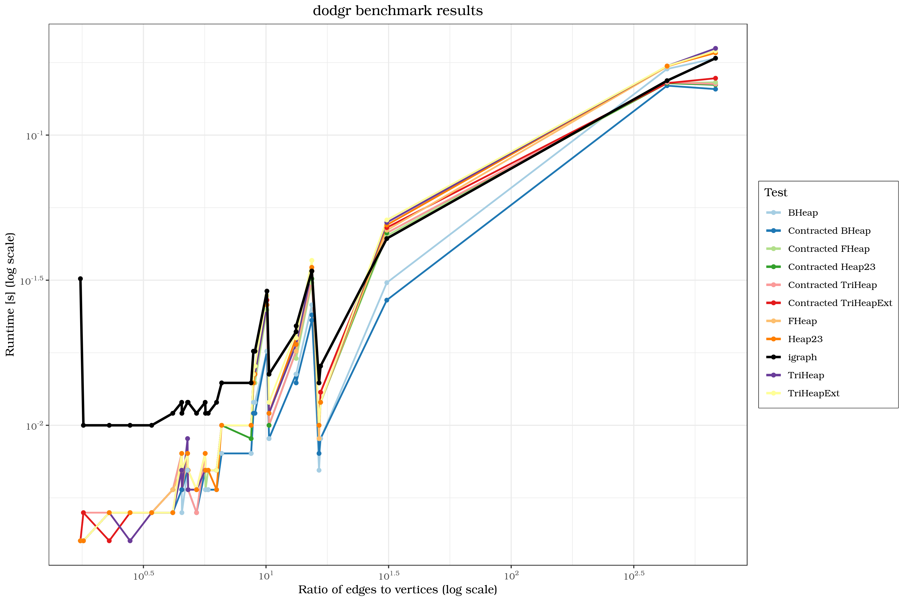

This vignette contains runtime comparisons for a number of routing operations between random vertices using distance calculation functions from the dodgr and igraph packages. The experiments are run using the compare_heaps() function, which successively calls functions igraph::distances() and then dodgr_dists() with all implemented options for the heap parameter and measures their respecive runtimes.
The graph data on which the tests are performed are taken from the igraphdata package.
To be able to run compare_heaps(), we need to create data.frame objects from the igraphdata data. As we need at least columns for each graph edges’ origin, destination and weight, not all igraphdata are fit for our purposes, because they lack a weight column. In these cases, all their edge weights are assumed to be 1 so they can be brought into a valid format.
The following code compiles all igraph objects into a list of usable data.frame objects. If the data features a column weight, it will be used for the edge weights, otherwise all edge weights are assumed to be 1.
datasets <- data (package = "igraphdata")
datasets <- datasets$results [, "Item"]
all_graphs <- list ()
gr_el <- 1
for (i in seq_along (datasets))
{
dat <- datasets [i]
data (package = "igraphdata", list = dat)
dat_graph <- get (dat)
if (class (dat_graph) == "igraph")
dat_graph <- list (dat_graph)
for (j in seq_along (dat_graph))
{
graph <- dat_graph [[j]]
graph <- igraph::get.data.frame (graph)
from_id <- graph$from
to_id <- graph$to
if ("weight" %in% names (graph))
d <- graph$weight
else
d <- 1
graph_out <- data.frame (from_id, to_id, d)
all_graphs [[gr_el]] <- graph_out
gr_el <- gr_el + 1
}
}Now, compare_heaps() can be run for all graphs. First, show the number of vertices and edges of all graphs in the list.
num_edges <- unlist (lapply (all_graphs, nrow))
num_vertices <- unlist (lapply (all_graphs, function (i)
nrow (dodgr_vertices (i))))
data.frame (num_edges, num_vertices, ratio = num_edges / num_vertices)## num_edges num_vertices ratio
## 1 7 4 1.750000
## 2 817 81 10.086420
## 3 23473 755 31.090066
## 4 125409 184 681.570652
## 5 178 37 4.810811
## 6 209 37 5.648649
## 7 215 37 5.810811
## 8 177 39 4.538462
## 9 125 24 5.208333
## 10 100 24 4.166667
## 11 82 24 3.416667
## 12 221 39 5.666667
## 13 400 46 8.695652
## 14 220 35 6.285714
## 15 53 19 2.789474
## 16 356 54 6.592593
## 17 2137 128 16.695312
## 18 2106 128 16.453125
## 19 640 71 9.014085
## 20 631 71 8.887324
## 21 915 69 13.260870
## 22 916 69 13.275362
## 23 1491 97 15.371134
## 24 1492 97 15.381443
## 25 6300 1316 4.787234
## 26 78 34 2.294118
## 27 18 10 1.800000
## 28 463 45 10.288889
## 29 32424 75 432.320000
## 30 11855 2617 4.529996benchmarks <- lapply (all_graphs, function (i)
compare_heaps (i, nverts = 100, replications = 10))
saveRDS (benchmarks, file = "benchmark_data.rds")benchmarks <- readRDS ("benchmark_data.rds")
elapsed <- unlist (purrr::map (benchmarks, "elapsed"))
tests <- unlist (purrr::map (benchmarks, "test"))
tests <- as.character (tests)
tests <- sub ("d <- dodgr_dists\\(graph, from = from_id, to = to_id, heap =",
"Contracted", tests)
p <- "d <- dodgr_dists\\(graph_contracted, from = from_id, to = to_id, heap = "
tests <- sub (p, "", tests)
tests [grepl ("igraph", tests)] <- "igraph"
tests <- gsub ("\"", "", tests)
tests <- gsub ("\\)", "", tests)
tests <- as.factor (tests)
n_tests <- dim (benchmarks [[1]]) [1]
ratio <- rep (num_edges / num_vertices, each = n_tests)
num_vertices <- rep (num_vertices, each = n_tests)
num_edges <- rep (num_edges, each = n_tests)
bm <- data.frame (num_vertices, num_edges, ratio, Test = tests, elapsed)Plot runtime versus the ratio of edges to vertices in the graph:
library (ggplot2)
library (RColorBrewer)
library (scales)
bm_igraph <- bm [bm$Test == "igraph", ]
bm_heaps <- bm [bm$Test != "igraph", ]
igr_legend_num <- which (sort (unique (bm$Test)) == "igraph")
pal <- brewer_pal (n_tests, "Paired")
legend_cols <- pal (n_tests)
legend_cols [igr_legend_num] <- "#000000FF"
ggplot (bm_heaps) +
geom_line (size = 0.8, aes (x = ratio, y = elapsed, colour = Test)) +
geom_point (size = 1.5, aes (x = ratio, y = elapsed, colour = Test)) +
geom_line (data = bm_igraph, size = 1.1, aes (x = ratio, y = elapsed, colour = "igraph")) +
geom_point (data = bm_igraph, size = 1.5, aes (x = ratio, y = elapsed, colour = "igraph")) +
scale_color_manual (values = legend_cols) +
scale_x_log10 (breaks = trans_breaks ("log10", function (x) 10^x),
labels = trans_format ("log10", math_format (10^.x))) +
scale_y_log10 (breaks = trans_breaks ("log10", function (x) 10^x),
labels = trans_format ("log10", math_format (10^.x))) +
labs (title = "dodgr benchmark results",
x = "Ratio of edges to vertices (log scale)",
y = "Runtime [s] (log scale)") +
theme_bw (base_family = "TeX Gyre Bonum") +
theme (plot.title = element_text(hjust = 0.5),
legend.box.background = element_rect ())